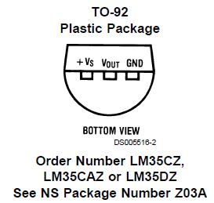

Connect to a thermometer
Best and most common choice (for non highly demanding applications) is the
LM35 from National (Panasonic electronic branch).
Feed the baby with anything between 0 and 35 V (!), you get a reading between -1 and %206V on the Vout pin (in basic mode, most likely what you need; see pdf for other possibilities).
Reading returns %200.01v per degree above 0. Convert to Celsius degrees like that :
val = analogRead(potPin); //read the value of sensor
temperature = (5*val*100/1024); //convert voltage to temperature

Documentation
Official documentation from National:
LM35.pdf
Links